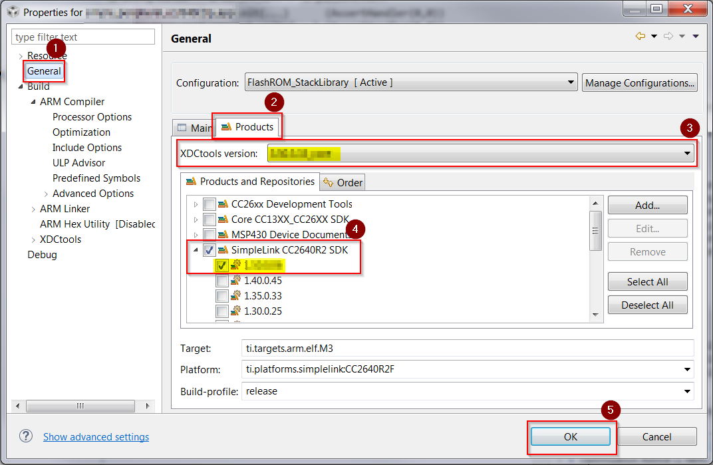
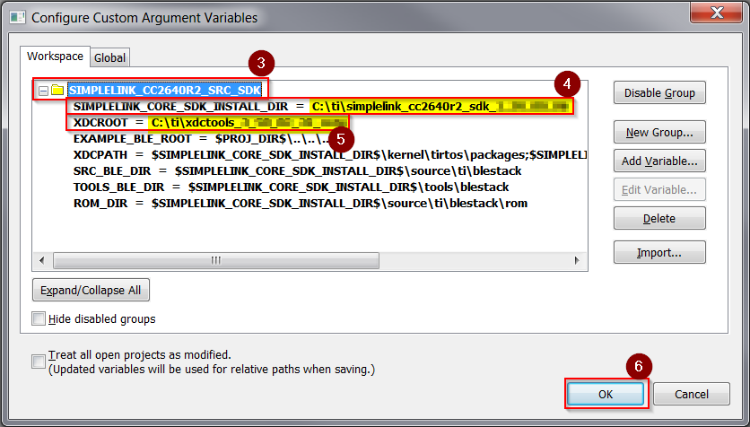

BLE-Stack 3.01.00 to BLE-Stack 3.01.01¶
This section will describe a way to migrate a project from BLE-Stack 3.01.00 to a BLE-Stack 3.01.01. This approach will be modifying an existing project’s configuration to utilize BLE-Stack 3.01.01 libraries, tools, and code.
There are no changes in stack API between BLE-Stack 3.01.00 and BLE-Stack 3.01.01.
For this migration guide, simple_peripheral from BLE-Stack 3.01.00 will be ported to BLE-Stack 3.01.01. Utilize the IDE and Tools recommended by BLE-Stack release notes.
Once project configurations are updated, follow same building procedure used prior to the port. It is assumed the latest SDK has already been installed, see SimpleLink SDKs.
For API Descriptions see BLE Stack API Reference
See section appropriate to IDE:
CCS Instructions¶
in order to update the stack and application project to work with the latest SDK release using CCS IDE
Stack Project Porting¶
Updating XDC Tools to Version 3.50.3.33
Open Project Properties of the stack project for the application being ported
- Select General from the Navigation Tree
- Select Products Tab
- Select XDCtools version 3.50.3.33_core (Latest)
- Save Changes

Figure 127. CCS Updating XDC Tools Visual Instructions
This will update the
XDC_CG_ROOTpath variable to utilize the latest version of XDCtools.Select BLE-Stack 3.01.01
Open Project Properties of the stack project for the application being ported
- Select General from the Navigation Tree
- Select Products Tab
- Select SimpleLink CC2640R2 SDK version containing BLE-Stack 3.01.01
- Save Changes

Figure 128. CCS Updating BLE-Stack Visual Instructions
This will update the
COM_TI_SIMPLELINK_CC2640R2_SDK_INSTALL_DIRpath variable to utilize the SDK containing BLE-Stack 3.01.01.The path variables
SRC_BLE_DIRandTOOLS_BLE_DIRwill automatically be updated to point to the BLE-Stack 3.01.01 version of tools and code.
At this point all the Path Variables shown in the Linked Resources of the Project Properties window will reflect the updated information.
Figure 129. CCS Checking Path Variables Modified
Note
In this particular example, the path variable EXAMPLE_BLE_ROOT
will still point to the previous SDK. The variable represents the path
of the code being ported.
Application Project Porting¶
Updating XDC Tools to Version 3.50.3.33 and BLE-Stack to 3.01.01
Open Project Properties of the application project for the application being ported
- Select General from the Navigation Tree
- Select Products Tab
- Select XDCtools version 3.50.3.33_core (Latest)
- Select SimpleLink CC2640R2 SDK version containing BLE-Stack 3.01.01
- Save Changes
This will update the
XDC_CG_ROOTpath variable to utilize the latest version of XDCtools.This will update the
COM_TI_SIMPLELINK_CC2640R2_SDK_INSTALL_DIRpath variable to utilize the SDK containing BLE-Stack 3.01.01.
At this point all the Path Variables shown in the Linked Resources of the Project Properties window will reflect the updated information. See CCS Checking Path Variables Modified.
IAR Instructions¶
Since both the application and stack project utilize a common custom argument variable file, only this file needs to be configured to point to the correct stack and tools.
Modifying Custom Argument Variables for BLE-Stack 3.01.01 and XDCtools 3.50.3.33_core
Click Tools from the Toolbar
Select Configure Custom Argument Variable item

Expand the
SIMPLELINK_CC2640R2_SRC_SDKHeadingModify
SIMPLELINK_CORE_SDK_INSTALL_DIRto path of SDK containing BLE-Stack 3.01.01Modify
XDCROOTto path of XDCtools 3.50.3.33_coreSave Changes
Re-launch IAR Embedded Workbench
This will refresh all file references to use BLE-Stack 3.01.01 and XDCtools 3.50.3.33_core.